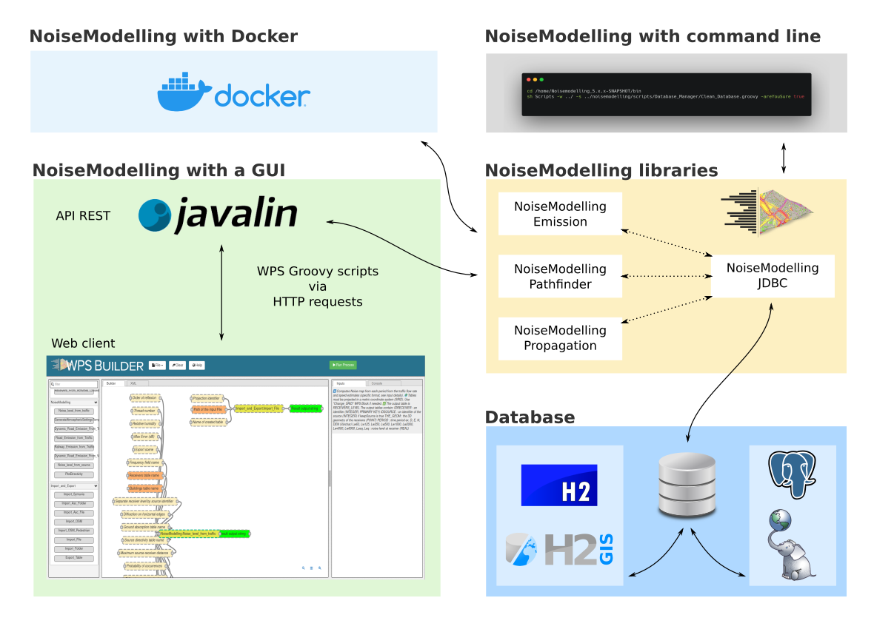

Architecture
NoiseModelling is the name of the application that allows to calculate noise maps (notably through a Graphical User Interface). But did you know that it is also the name of different calculation libraries?
The documentation below presents the architecture of NoiseModelling with its different bricks and the ways to launch it:
NoiseModelling libraries
Database connection
NoiseModelling with a Graphical User Interface (GUI)
NoiseModelling with command line
NoiseModelling with Docker
{kind=link}

1. NoiseModelling libraries
NoiseModelling is made of 5 main libraries:
noisemodelling-emission: to determine the noise emissionnoisemodelling-pathfinder: to determine the noise pathnoisemodelling-propagation: to calculate the noise propagationnoisemodelling-jdbc: to connect NoiseModelling to a databasenoisemodelling-scripts: Groovy scripts (Blocks) and web server
These libraries may be used independently of each other. Note that the noisemodelling-jdbc library (JDBC = Java DataBase Connectivity) is central since it allows the three others to communicate with each other as soon as the data are stored in a database (which is the default situation).
2. Database connection
Thanks to the noisemodelling-jdbc library, NoiseModelling can access and communicate with databases. This system is quite adapted to store, manage and process (spatial) data. Here, the user has the choice between two database (free, open-source and powerful) couples:
H2 / H2GIS, which is configured and embedded by default. In this case, the user has nothing to do.
PostGreSQL / PostGIS. In this case, the user has to configure the connection (read “Use NoiseModelling with a PostGIS database” page for more information).
In both cases, database can be local or remote.
3. NoiseModelling with a GUI
NoiseModelling has a Graphical User Interface (GUI). It is accessible through a web browser and the web page is named “Builder”.
In order for the Builder to communicate with the NoiseModelling libraries, we use a standard named Web Processing Service (defined by the Open Geospatial Consortium OGC) API to execute scripts. These scripts are written in the Groovy language and are called “Blocks”.
You can see NoiseModelling with a GUI in action in the page “Get Started - GUI”.
4. NoiseModelling with command lines
You can use NoiseModelling with command lines. To do so,
Open a terminal
Go in the NoiseModelling directory
Call the .groovy script (Block) you want, with the needed arguments
Note
The .groovy script (Block) may be simple (the ones already provided with NoiseModelling, executing one task) or complex (tailor-made by users and calling one or many .groovy script(s) (Blocks)).
Note
No need to launch / start the application as we do with web server. Here the NoiseModelling libraries are called directly for each instructions.
Examples can be found in the page “NoiseModelling client line interface (CLI)”.
5. Docker Setup
When a developer uses Docker, he creates an application or service, which he then bundles together with the associated dependencies in a container image. An image is a static representation of the application or service, its configuration and dependencies.
Available versions
The Docker images are published on our Github repository. It is the best way to safely host NoiseModelling on a public server. Be aware that a registered user may be able to run a privilege escalation attack through the usage of scripts/SQL, so you should add only trusted users.
On the root of this repository you can find an example docker compose.
You can edit the following environment variables:
PROXY_BASE_URL : If you have a domain name you can use the your domain name instead of localhost
ROOT_URL : By default the service is accessible from the path /noisemodelling but you can change it by using the environment variable ROOT_URL (empty to use the base url)
UNSECURE_MODE : By default the registration is enabled (with TOTP). If you use this docker image locally, you can disable the registration by setting the environment variable UNSECURE_MODE in the docker-compose.yml file to true.
Dependencies
Install Docker or Podman on your system
Running
Download the file docker-compose.yml and run this command in the same folder:
docker compose up -d
or
podman compose up -d
Follow the instructions of the logs in order to register the administrator account (if not in unsecure mode).
docker compose logs noisemodelling
or
podman compose logs noisemodelling